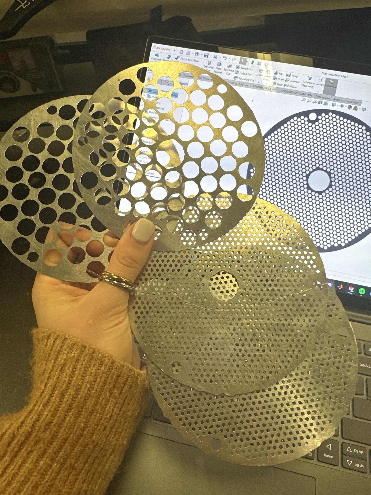
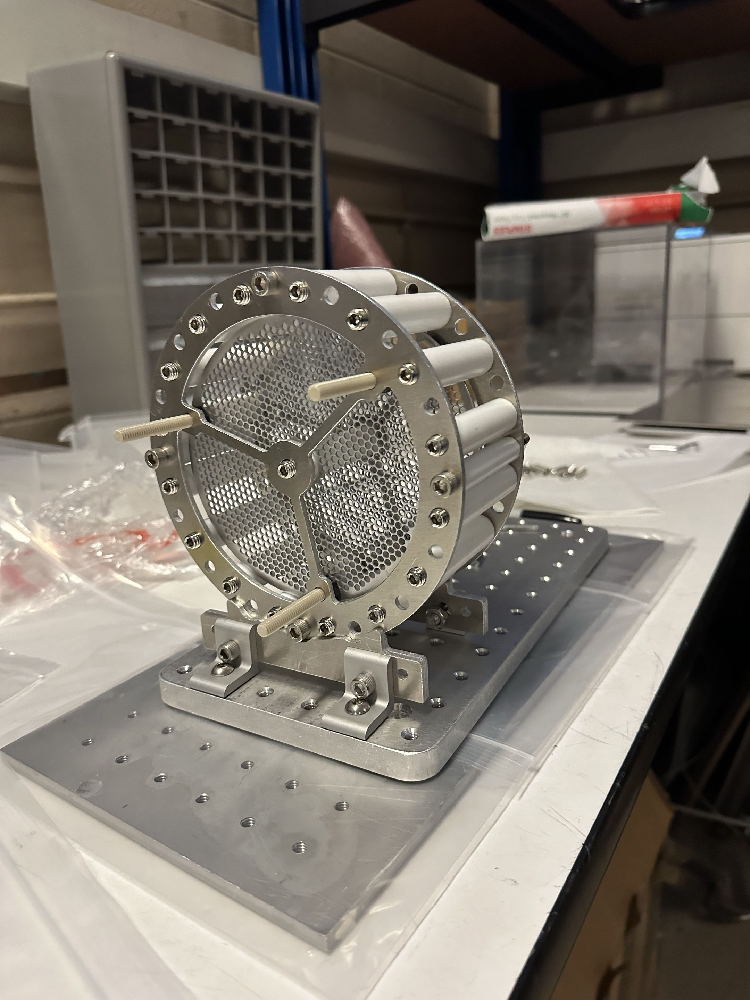
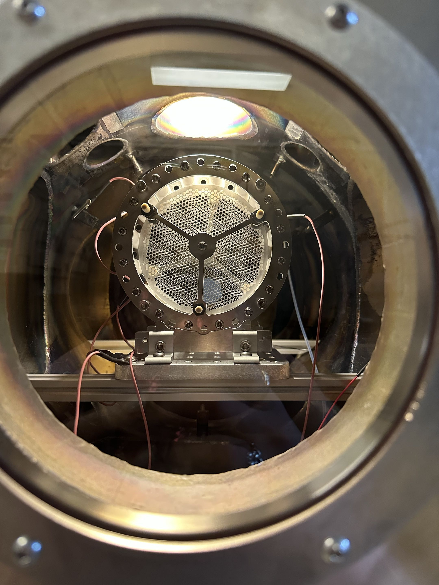
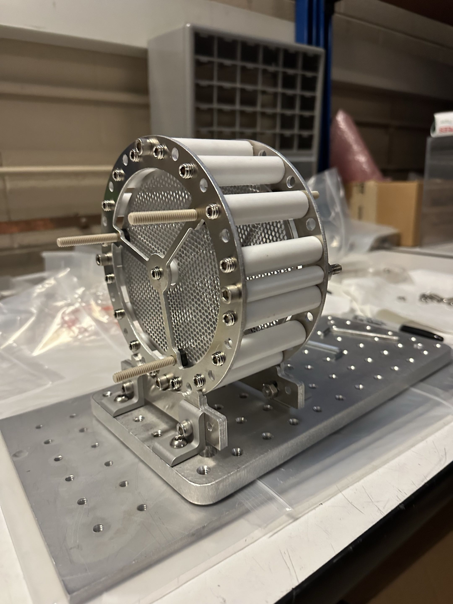

Burlington County News
April 14, 2022
Featured article highlighting my work on the Ground Station application and contributions to the A3Sat CubeSat project at the Institute for Earth Observations.
Read ArticleAerospace Engineer & Astrophysics Researcher
Harvard College '27 | S.B. in Mechanical and Aerospace Engineering, Astrophysics
Passionate about aerospace engineering, machine learning, and astrophysics research.
Winner of the Congressional App Challenge and Congressional Award Gold Medal.
I am a student at Harvard College pursuing a S.B. in Mechanical and Aerospace Engineering and Astrophysics, with cross-enrollment at MIT. My research spans aerospace engineering, machine learning, astrophysics, and computational methods, with a focus on trajectory optimization, interstellar object tracking, and transformer architectures for scientific applications.
I have extensive experience in both theoretical research and practical engineering, having worked at institutions including Princeton University, Harvard-Smithsonian CfA, and the Institute for Earth Observations. My work spans across conferences including AIAA, AGU, IEEE, and ICWSM, with research spanning from CubeSat development to UAP analysis using multimodal transformers.
I am committed to advancing STEM education and making cutting-edge research accessible. Through my work, I aim to demonstrate how engineering, machine learning, and astrophysics can be combined to solve complex real-world challenges.
Designing and implementing a custom diffusion model to predict thrust-control vectors for global trajectory search in the Circular Restricted Three-Body Problem (CR3BP).
Developing new methods for precision tracking of interstellar objects and NEOs using JWST and terrestrial telescopes.
Manufacturing rocket nozzles and conducting hydrostatic and static firing tests for the Spaceport America Cup competition.
Developed ground stations and designed low-cost CubeSats for international distribution; showcased at IEEE, SmallSat Conference, and AGU. Collaborated with NASA, U.S. Naval Academy, Kenyan Space Agency, and more; impacted STEM curricula globally.
Designed a multimodal (infrared video & audio) transformer architecture for UAP analysis, integrating AST and MViT with DINO pretraining and InfoSieve.
Conducted NLP, computational linguistics, and AI bias research on transformer models; presented at international conferences.
Integrated GPT-3 and advanced transformer models for automated meeting summarization, robust Q&A systems, and additional NLP tasks.
Computed Keplerian elements of asteroid 2001 MZ7 using the Method of Gauss and Monte Carlo simulations; published by IAU MPC.
Trained and evaluated YOLOv4 CNNs for precise mosquito habitat detection; first author at AGU, Globe IVSS, arXiv, and NASA symposium.
Simulated ETI probabilities via Monte Carlo; lead author at NASA's AbSciCon22 on extraterrestrial intelligence modeling.
Analyzed Landoltia punctata DNA sequences; published two mRNA sequences in NCBI GenBank and achieved course valedictorian.
A comprehensive desktop software application designed for real-time communication with CubeSat satellites. The app enables data collection, transmission, and analysis of environmental and atmospheric data including temperature, barometric pressure, humidity, and air quality.
Contributed to the development of a 4-inch CubeSat satellite system at the Institute for Earth Observations. The project involved building and programming miniature satellites capable of atmospheric data collection via drone deployment.
Worked as an intern at the Palmyra Cove Nature Park's Institute for Earth Observations, contributing to the Environmental STEM Center's mission of making advanced technology accessible to students and researchers.
17 publications across AIAA, AGU, IEEE, ICWSM, and other conferences
View Google Scholar ProfileGenetic Algorithm Identification of Initial Orbits for Interplanetary and Earth–Moon Transfers.
AIAA Conference Paper (AIAA 2026-2923), Trajectory/Mission/Maneuver Design and Optimization III, 2026.
Astrometric Parallax Measurements with JWST for Localization of Near-Earth Objects.
arXiv preprint, 2025.
Creating the Earth SySTEM Observatory: Integrating Spaceborne and Ground-Based Environmental Research.
IEEE ISEC, Princeton University, 2025.
Multi-Modal Generalized Class Discovery for Scalable Autonomous All-Sky Surveys.
IAIFI Summer Workshop, Massachusetts Institute of Technology, 2024.
The A3Sat Emulator: A Catalyst in Disruptive CubeSat and Space Technology.
IEEE ISEC, Princeton University, 2024.
A3Sat: Expanding STEM Education through CubeSats and a Global Data Network.
AGU Annual Meeting, 2023.
A3Sat Emulator Enterprise: To Observe the Earth and Visualize the Future.
Small Satellite Conference, 2023.
Data-Driven Unsupervised Semantic Network Algorithm for Large Language Model Examination/Exploration.
SSRN, 2023.
The GPT-Comparator: Discovering and Reporting Spatial and Topical Biases in Generative Pre-Trained Transformers.
SSRN, 2023.
A3Sat: Using CubeSat Emulators to Broaden Advanced Participation in STEM Education.
IEEE ISEC, Johns Hopkins University (APL), 2023.
Observations of Near-Earth Asteroid 2001 MZ7.
IAU Minor Planet Center, 2022.
A Multi-Modal Architecture for Identifying Anti-Social Imagery.
ICWSM, 2022.
Estimation of Extraterrestrial Intelligent Civilizations and Attributes per Exoplanetary Continuum through Algorithmic Simulation and Civilization Modeling.
AGU AbSciCon, 2022.
A3Sat: Using CubeSats to Inspire the Next Generation STEM Professionals.
IEEE ISEC, Princeton University, 2022.
Novel Approach to Autonomous Mosquito Habitat Detection Using Satellite Imagery and Convolutional Neural Networks for Disease Risk Mapping.
AGU Fall Meeting, 2021.
Landoltia punctata clone W377.20 urease accessory protein-like mRNA.
NCBI GenBank, 2021.
Landoltia punctata clone W378.20 ribulose-1,5-bisphosphate carboxylase small subunit-like mRNA.
NCBI GenBank, 2021.
This assignment was completed for ES96 at Harvard University. The analysis involves reverse engineering a system or technology to understand its design, functionality, and implementation details.
This reverse engineering assignment involved a comprehensive analysis of a system's architecture, components, and operational mechanisms. The investigation examined the design principles, implementation details, and functional relationships between different subsystems.
Key findings from the analysis include insights into the system's structural organization, data flow patterns, and the underlying technologies employed. The reverse engineering process revealed important design decisions and their implications for system performance and functionality.
The complete analysis, including detailed diagrams, technical specifications, and findings, is available in the PDF document above.
Course project for Space Propulsion: our team is designing and building an ionic ramjet engine, combining supersonic inlet ram-compression ideas with electrostatic acceleration of ionized flow. The work spans concept of operations, hardware integration, and bench testing.
QuickTime (.mov) — use Safari or download if your browser does not play inline.




April 14, 2022
Featured article highlighting my work on the Ground Station application and contributions to the A3Sat CubeSat project at the Institute for Earth Observations.
Read Article2021 Winner - New Jersey 3rd District
Recognized as the winner of the Congressional App Challenge for the Ground Station application, with a demonstration at the prestigious #HouseOfCode 2022 conference.
View RecognitionApril 22, 2022
Coverage of my achievement in creating satellite software that enables real-time communication and data collection from CubeSat systems.
Read ArticleI'm always interested in discussing new opportunities, collaborations, or answering questions about my work. Feel free to reach out!